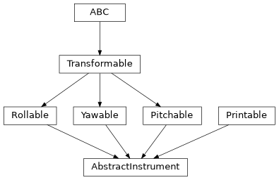

AbstractInstrument#
- class esis.optics.abc.AbstractInstrument[source]#
Bases:
Printable,Rollable,Yawable,PitchableAn interface describing the entire optical system.
Attributes
The angle between the grating normal and the direction of the incident light.
The angle between the grating normal and the direction of the diffracted light.
The name of the logical axis corresponding to changing camera channel.
A model of the camera and sensors.
A model of the central obscuration.
A default grid of field positions to trace through the system.
A model of the field stop.
A model of the thin-film filters.
A model of the front aperture plate.
A model of the diffraction grating array.
Extra keyword arguments used to plot the optical system.
The human-readable name of the instrument.
pitch angle of this object
A model of the primary mirror.
A default grid of pupil positions to trace through the system.
roll angle of this object
Convert this model into an instance of
optika.systems.SequentialSystem.the coordinate transformation between the global coordinate system and this object's local coordinate system
A default grid of wavelengths to trace through the system.
The maximum wavelength permitted through the system.
The minimum wavelength permitted through the system.
The value of
wavelengthconverted to physical units if needed.yaw angle of this object
Methods
__init__()to_string([prefix])Public-facing version of the
__repr__method that allows for defining a prefix string, which can be used to calculate how much whitespace to add to the beginning of each line of the result.Inheritance Diagram
- to_string(prefix=None)#
Public-facing version of the
__repr__method that allows for defining a prefix string, which can be used to calculate how much whitespace to add to the beginning of each line of the result.
- property angle_grating_input: AbstractScalar#
The angle between the grating normal and the direction of the incident light.
This is the incidence angle \(theta_i\) in the diffraction grating equation.
- property angle_grating_output: AbstractScalar#
The angle between the grating normal and the direction of the diffracted light.
This is an analogue to the diffracted angle in the diffraction grating equation.
- abstract property axis_channel#
The name of the logical axis corresponding to changing camera channel.
- abstract property central_obscuration: None | AbstractCentralObscuration#
A model of the central obscuration.
- abstract property field: None | AbstractCartesian2dVectorArray#
A default grid of field positions to trace through the system.
- abstract property field_stop: None | AbstractFieldStop#
A model of the field stop.
- abstract property filter: None | AbstractFilter#
A model of the thin-film filters.
- abstract property front_aperture: None | AbstractFrontAperture#
A model of the front aperture plate.
- abstract property grating: None | AbstractGrating#
A model of the diffraction grating array.
- abstract property kwargs_plot#
Extra keyword arguments used to plot the optical system.
- abstract property pitch: Quantity | int | float | complex | ndarray | AbstractScalar#
pitch angle of this object
- abstract property primary_mirror: None | AbstractPrimaryMirror#
A model of the primary mirror.
- abstract property pupil#
A default grid of pupil positions to trace through the system.
- abstract property roll: Quantity | int | float | complex | ndarray | AbstractScalar#
roll angle of this object
- property system: SequentialSystem#
Convert this model into an instance of
optika.systems.SequentialSystem.This is a cached property that is only computed once.
- property transformation: AbstractTransformation#
the coordinate transformation between the global coordinate system and this object’s local coordinate system
- abstract property wavelength: None | Quantity | AbstractScalar#
A default grid of wavelengths to trace through the system.
Can be either in normalized coordinates (in the range \(-1\) to \(+1\)) or in physical coordinates (with units of length).
See also
wavelength_physicalThis value converted into in physical coordinates.
- property wavelength_max: Quantity | AbstractScalar#
The maximum wavelength permitted through the system.
- property wavelength_min: Quantity | AbstractScalar#
The minimum wavelength permitted through the system.
- property wavelength_physical: ScalarArray#
The value of
wavelengthconverted to physical units if needed.